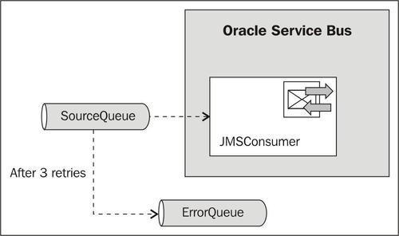
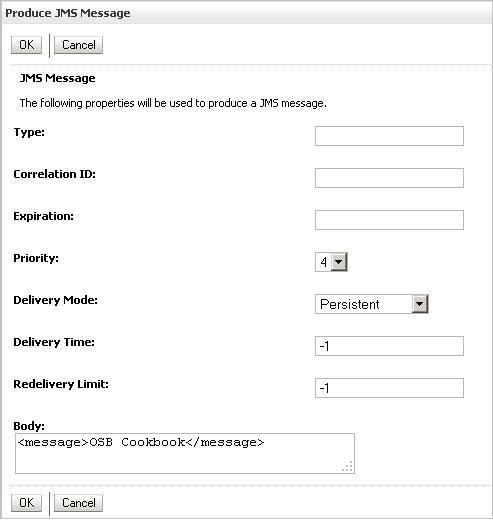
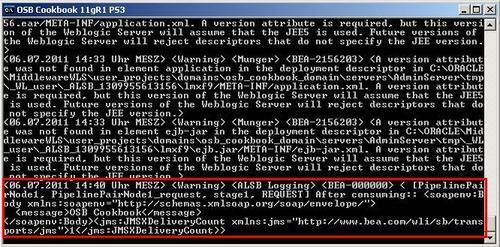
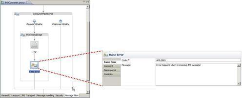
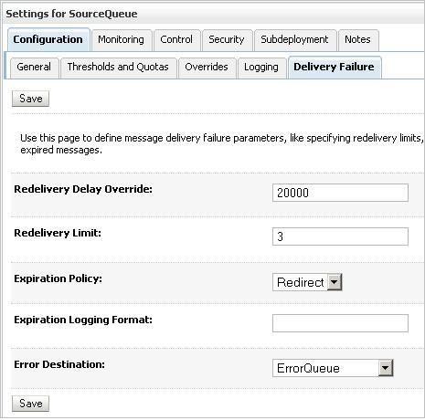
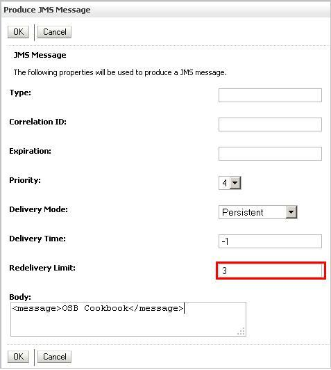

In this recipe we will configure the redelivery limit and expiration policy on a Queue that will take part in a reliable communication. This option prevents an infinite loop: when the redelivery limit is reached, the message will be moved to the error queue. The redelivery limit on the queue will always override the value set on the message itself.
For this recipe we need the two queues from the standard environment and a proxy service that consumes the messages from the SourceQueue. The proxy service will initially just log the content of the message to the console using a Log action.

Import the OSB project into Eclipse from \chapter-10\getting-ready\configuring-retry-handling and deploy it to the OSB server. In the WebLogic console, perform the following steps to send a message to the queue for testing:
<message>OSB Cookbook</message> into the Body field.
Make sure that the log entry shows up in the OSB console window:

The message has been consumed by the proxy service and the log output shows the successful processing of the message.
To test the retry handling, we first need to make sure that the proxy service fails. We can easily do that by adding a Raise Error action to the message flow:
In Eclipse OEPE, perform the following steps:

Now let's configure the retry behavior. In WebLogic Console, perform the following steps:
20000 (to wait for 20 seconds) into the Redelivery Delay Override field. 3 into the Redelivery Limit field (to redeliver the message three times).
To test it, create a new message in the queue in the same way as shown in the Getting Ready section. Just make sure to overwrite the -1 in the Redelivery Limit field to the same value as specified on the queue:

Otherwise the -1 will overwrite the setting on the queue and it will again retry forever. This seems to be a limitation of the Weblogic console Produce JMS message client. If the message is sent from a real client, such as another OSB business service, then it would not be necessary and the settings on the queue would be taken.
When a proxy service reads a message from the SourceQueue and there is an error somewhere in the process, the message will be rolled back and stays on the queue. WebLogic will detect this and wait for 20 seconds before the proxy service can consume it again. If this happens three times then WebLogic will move the message automatically to the error queue. Such an error queue can be monitored for new messages through the WebLogic diagnostic module. An administrator might be able to solve the problem and remove the message or move it back into the original queue.